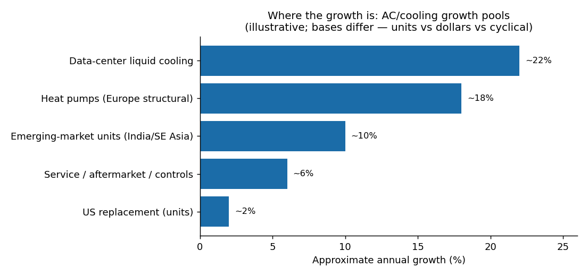

7 Market share and share of growth
This chapter tackles the piece of the original brief not yet quantified: what share of the industry does each player hold, and — more important for investing — what share of the growth are they positioned to capture? The second question matters more than the first: a company with a modest overall share but a dominant position in the fast, high-margin pools (data-center cooling, services) can be a better investment than a volume leader stuck in the slow, low-margin pools.
Market-share data here is genuinely fuzzy, for two reasons. Basis: revenue vs. units. Daikin leads on equipment revenue; Chinese makers (Midea, Gree) lead on units because of China’s enormous domestic volume. Scope: “air conditioning” vs. “HVAC” vs. regional cuts move a company’s share by several points. Most precise percentages come from paywalled secondary aggregators and should be treated as directional, not authoritative. The reputable primary anchors are JARN (units), BSRIA (paywalled), and company filings. I give ranges and flag the weakest figures.
7.3 Where the growth is: five pools
Overall industry growth (~6% in dollars) masks very different sub-pools. This chart is illustrative — the bases differ (units vs. dollars vs. cyclical), so read it as relative positioning, not precise forecasts.

data/growth_pool_cagr.csv.
Pool 1 — Data-center cooling (highest quality). The fastest, highest-margin pool. Liquid cooling alone is roughly $5–6B (2025) growing ~20–25% to ~$15–19B by 2030, driven by hyperscaler AI capex (~$380B in 2025). Captured disproportionately by Vertiv (clear leader), Modine (fastest grower off a small base — data-center revenue +119% in FY2025), nVent, and Schneider.3
Pool 2 — Heat pumps / electrification (high quality, cyclical). A large structural shift, but policy-driven and volatile: European sales fell ~22% in 2024, then began rebounding ~+10% in 2025. Captured by Daikin (~18–20% EU share), Carrier (via its ~€12B Viessmann acquisition), NIBE (purest listed play), and private Bosch/Vaillant.4
Pool 3 — Emerging-market first-time adoption (biggest volume, lowest quality). The largest unit-growth pool — India ~15M units (2025) heading toward ~28M by 2030 — but volume-led, thin-margin, and dominated by Gree, Midea, Haier, Daikin, LG/Samsung, plus India-listed Voltas, Blue Star. Lower-quality growth for Western investors.5
Pool 4 — U.S. replacement + ASP uplift (moderate volume, high value). Low unit growth but a high-value, replacement-driven base with a genuine ~8–10% price uplift from the refrigerant/efficiency transition. Captured by Trane, Carrier, Daikin/Goodman, Lennox, Rheem (carries the antitrust overhang from the regulation chapter).
Pool 5 — Service / aftermarket / controls (highest-margin recurring). Smaller headline growth but the highest-quality dollars — recurring, high-margin, installed-base-driven. Led by Trane (record $7.8B backlog at YE2025) and Johnson Controls (OpenBlue controls), with Carrier and Daikin growing their recurring mix.6
7.4 Who is exposed to which growth pool
This matrix is the heart of the “share of growth” question — qualitative exposure (H/M/L), synthesized from the analysis above:
| Company | Data center | Heat pumps | EM adoption | US replace + ASP | Service/controls |
|---|---|---|---|---|---|
| Vertiv (VRT) | H | – | – | – | M |
| Trane (TT) | L | M | L | H | H |
| Carrier (CARR) | M | H | M | H | M |
| Daikin (6367.T) | L | H | H | H | M |
| Johnson Controls (JCI) | M | L | L | L | H |
| Modine (MOD) | H | – | – | M | L |
| Lennox (LII) | – | L | – | H | M |
| nVent (NVT) | H | – | – | – | – |
| NIBE (NIBE-B) | – | H | L | – | M |
| Midea / Gree / Haier | L | M | H | – | L |
JARN/IIR, “Global air conditioner market 2024 performance,” https://iifiir.org/en/news/global-air-conditioner-market-2024-performance; Daikin “global No.1” net-sales page, https://www.daikin.com/air/daikin_brand/glance/modals/01_sales; Spherical Insights “Top 20 HVAC Companies 2025,” https://www.sphericalinsights.com/blogs/top-20-hvac-companies-in-global-2025-statistics-view-by-spherical-insights-and-consulting; Asia-Pacific revenue weight via Grand View, https://www.grandviewresearch.com/horizon/outlook/hvac-systems-market/asia-pacific.↩︎
Johnson Controls, “Completes Sale of Residential and Light Commercial HVAC Business” (Aug 1, 2025), https://www.johnsoncontrols.com/media-center/news/press-releases/2025/08/01/johnson-controls-completes-sale-of-residential-and-light-commercial-hvac-business; U.S. share estimates from deallab (https://en.deallab.info/north-america-hvac-market-2024/) and GMInsights (https://www.gminsights.com/industry-analysis/us-residential-hvac-market); Watsco distribution share via Morningstar, https://www.morningstar.com/company-reports/1219045-watsco-is-the-largest-hvac-distributor-in-north-america.↩︎
Data-center cooling sizing: Grand View (https://www.grandviewresearch.com/press-release/global-data-center-cooling-market), MarkNtel liquid cooling (https://www.marknteladvisors.com/research-library/data-center-liquid-cooling-market.html); Modine FY2025 8-K (https://www.sec.gov/Archives/edgar/data/0000067347/000155837025000627/tmb-20250204xex99d1.htm). Treat CAGR ranges, not levels, as reliable.↩︎
EHPA Market Report 2025 (https://www.ehpa.org/wp-content/uploads/2025/07/EHPA-Market-Report-2025-executive-summary.pdf); Carrier–Viessmann deal (https://naturalrefrigerants.com/news/carrier-announces-e12-billion-acquisition-of-viessmann-groups-heat-pump-business/).↩︎
India unit outlook via Expert Market Research (https://www.expertmarketresearch.com/reports/india-air-conditioner-market) and Accio (https://www.accio.com/business/air-conditioner-sales-trend-in-india). Soft, research-firm sizing.↩︎
Trane Q4/FY2025 results, record backlog, https://investors.tranetechnologies.com/news-and-events/news-releases/news-release-details/2026/Trane-Technologies-Reports-Strong-Fourth-Quarter-and-Full-Year-2025-Results-Robust-Bookings-and-Backlog-Provide-Strong-Visibility-Entering-2026/default.aspx.↩︎